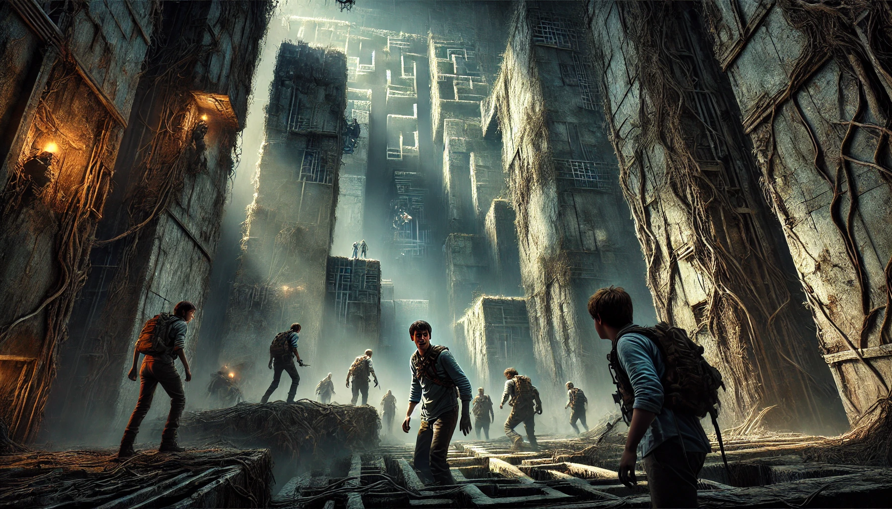

메이즈 러너
목차
작가
제임스 대시너
출판연도
2012년
감상평에 대한 AI그림
호흡과 전개가 빠르고 설정이 흥미롭다.
반전과 복선이 가득한 내용이어서 여러번 읽어도 질리지가 않는다.
주인공과 그를 둘러싼 작고도 넓은 세상의 정체를 추리하면서 읽게 되어 책에 몰입이 잘 된다.

감상평에 대한 AI평가
✨ 전반적으로 명확하고 핵심적인 포인트를 잘 잡았고, 개인적인 감상도 자연스럽게 녹아 있어서 좋아.
굳이 보완하자면, 특정 장면이나 인상 깊었던 반전에 대한 예시를 추가하면 감상이 더 생동감 있게 전달될 것 같아! 😊